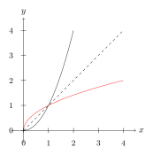
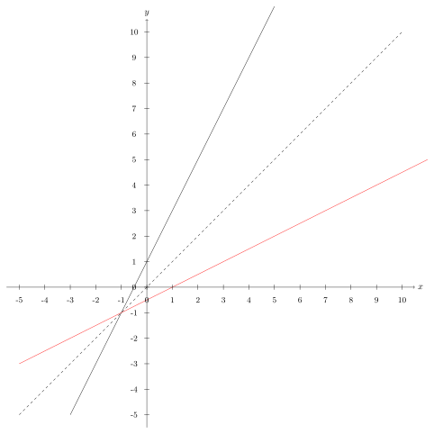
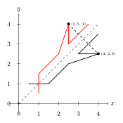
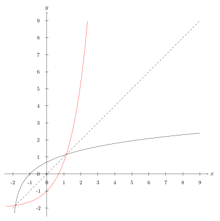
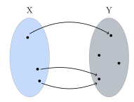
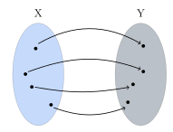
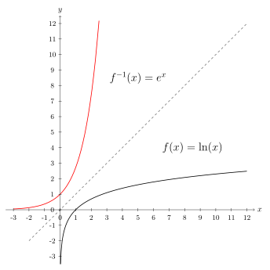
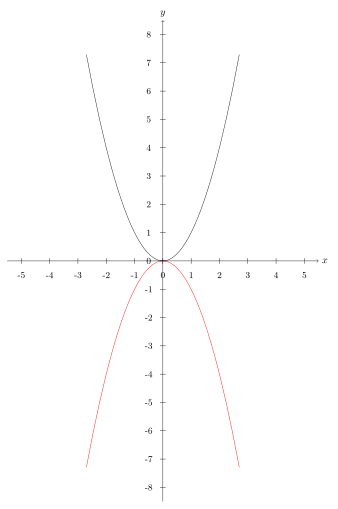
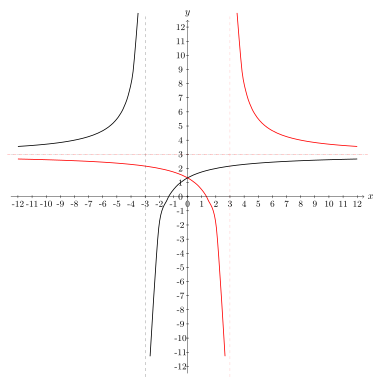
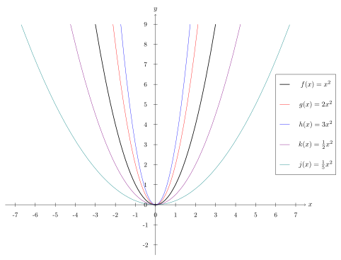

9. Meira um föll
9.1. Andhverfur
Þegar kemur að
andhverfum
en: inverse, inverse number, reciprocal, reciprocal number
Smelltu fyrir ítarlegri þýðingu.
Skoðum fyrst fallið \(f: \mathbb{R}_+ \to \mathbb{R}_+, \quad f(x)=x^2\).
Við vitum að andhverfa \(f(x)=x^2\) er \(f^{-1}(x)=\sqrt{x}\) vegna þess að:
Ef við teiknum gröf fallanna fáum við:
{kind=link}
Hér sjáum við að rauða grafið, \(\sqrt{x}\), er spegilmynd svarta grafsins, \(x^2\), um punktalínuna.
Athugasemd
Graf andhverfu falls er spegilmynd grafs fallsins um línuna \(y=x\).
Skoðum næst \(y=2x+1\) eða \(f(x)=2x+1\). Reiknum andhverfuna:
þá er \(f^{-1}(x) = \frac{1}{2} x - \frac{1}{2}\).
Teiknum nú línurnar:
{kind=link}
Hér er rauða línan andhverfa \(f(x)\), við sjáum að línan speglast nákvæmlega um \(y=x\) eins og í fyrra dæminu \(x^2\).
Hægt er að sannfæra sig á þessu með því að horfa á einfaldan feril sem fer í gengum 6 þekkta punkta,
Séu þessir punktar tengdir saman með strikum fæst svarti ferilinn sem við sjáum hér að neðan. Rauði ferillinn myndast þegar við speglum svarta yfir \(y=x\).
Speglum punktinum \((4, 2.5)\) yfir \(y=x\) , hann lendir í punktinum \((2.5,4)\) og strikið á milli þeirra er hornrétt á \(y=x\).
{kind=link}
Við getum því speglað punktunum um línuna með því að víxla á \(x\)- og \(y\)-hnitum punktanna. Andhverfi ferillinn fer því á milli punktana \((1, 0.5), (1,1.5), (2,2.5), (2.5,4), (2.5,3)\) og \((3.5,4)\).
Skoðum að lokum \(g(x) = \ln(x+2)\). Reiknum andhverfuna:
Þá er andhverfa fallið \(g^{-1}(x) = e^x -2\). Á þessari mynd má sjá gröf ferlanna, \(g(x)\) er svart en \(g^{-1}(x)\) rautt.
{kind=link}
9.2. Eintæk og átæk föll
Skilgreining
Látum \(f: X \to Y\) vera gefið fall. Mengið \(X\) kallast formengi en: argument domain, domain, domain carrier, index set, latent domain, range of arguments, set of definition, source
(eða skilgreiningarmengi) fallsins og mengið \(Y\) bakmengi en: codomain, latent range, potential range, range, range carrier, target
Smelltu fyrir ítarlegri þýðingu.(eða myndmengi eða varpmengi) þess.
Smelltu fyrir ítarlegri þýðingu.
Í formengi falls \(y=f(x)\) eru þær tölur sem við getum sett inn í fallið (\(x\) -in) en í bakmenginu eru þær tölur sem geta komið út (\(y\) -in).
9.2.1. Átæk föll
Látum \(f: X \to Y\) vera fall.
Látum \(y_0 \in Y\) vera stak í bakmenginu. Oft þurfum við að vita hvort hægt sé að finna einhverja lausn á jöfnunni
það er að segja, hvort hægt sé að finna eitthvað \(x_0 \in X\) þannig að \(f(x_0)=y_0\).
Ef þessi jafna hefur lausn fyrir öll stökin í bakmenginu þá segjum við að fallið sé
átækt
en: surjective, onto
Smelltu fyrir ítarlegri þýðingu.
9.2.2. Skilgreining
Skilgreining
Fall \(f: X \to Y\) er sagt vera átækt ef fyrir sérhvert \(y \in Y\) er til \(x \in X\) þannig að \(f(x)=y\).
Skoðum mengjamyndir til að sjá þessa tegund af vörpun fyrir okkur. Hér er \(X\) skilgreiningarmengið og \(Y\) myndmengið.

Við sjáum að öll stökin í myndmenginu eru með í vörpuninni og hér er í lagi að fleiri en eitt stak í skilgreiningarmenginu varpast á sama stak í myndmenginu.
Hér er dæmi um vörpun sem er ekki átæk:
{kind=link}
Hún er ekki átæk því hér eru tvö stök í myndmenginu sem eru ekki með í vörpuninni.
Dæmi
1. Skoðum fallið \(f: \mathbb{R} \to \mathbb{R}\), \(f(x)=x^2\).
Tökum eftir að bakmengið er allt \(\mathbb{R}\), en \(x^2\) verður aldrei neikvæð tala. Til dæmis er \(-1\) stak í bakmenginu, en jafnan \(f(x)=-1\), eða \(x^2=-1\) hefur enga lausn í rauntölunum. Fallið er því ekki átækt.
2. Skoðum fallið \(g: \mathbb{R} \to \mathbb{R}_+\), \(g(x)=x^2\).
Hér er bakmengið mengi allra jákvæðra rauntalna. Fyrir sérhverja jákvæða rauntölu \(a\) hefur jafnan \(x^2=a\) lausn. Hún fæst með kvaðratrót. Fallið er því átækt.
3. Skoðum fallið \(h: \mathbb{R} \to \mathbb{R}\), \(h(x)=0\).
Sérhvert stak varpast í stakið \(0\) í bakmenginu. Til dæmis, fyrir stakið \(1\) í bakmenginu þá er ekki til nein lausn á jöfnunni \(h(x)=1\) þar sem það gefur \(0=1\) sem er fráleitt. Svo fallið er ekki átækt.
9.2.3. Eintæk föll
Skoðum aftur jöfnuna
Oft getur verið gagnlegt að vita hvort þessi jafna hafi margar lausnir.
Við segjum að fallið sé
eintækt
en: injective, schlicht, univalent
Smelltu fyrir ítarlegri þýðingu.
9.2.4. Skilgreining
Skilgreining
Fall \(f: X \to Y\) er sagt vera eintækt ef fyrir sérhvert \(y \in Y\) er til í mesta lagi eitt \(x \in X\) þannig að \(f(x)=y\).
Það er, ef \(f(x_1)=f(x_2)\) þá er \(x_1=x_2\).
Skoðum aftur mengjamyndir til að sjá þessa tegund af vörpun fyrir okkur. Hér er \(X\) skilgreiningarmengið og \(Y\) myndmengið.

Við sjáum að hvert stak í skilgreiningarmenginu á sér stak í myndmenginu og það er í lagi að sum stök í myndmenginu séu ekki með í vörpuninni.
Hér er dæmi um vörpun sem er ekki eintæk:
{kind=link}
Hér varpast tvö stök í skilgreiningarmenginu á sama stak í myndmenginu. Takið eftir að þessi vörpun er hvorki eintæk né átæk.
Dæmi
1. Skoðum fallið \(f: \mathbb{R} \to \mathbb{R}\), \(f(x)=x^2\).
Þetta fall er ekki eintækt. Til dæmis gildir \(f(-2)=f(2)=4\), það er jafnan \(f(x)=4\) hefur tvær lausnir.
2. Skoðum fallið \(f: \mathbb{R}_+ \to \mathbb{R}\), \(f(x)=x^2\).
Þetta fall er eintækt, þar sem skilgreiningarmengið inniheldur bara jákvæðar tölur. Ef \(x_1\) og \(x_2\) eru ólíkar tölur í \(\mathbb{R}_+\), þá eru \(x_1^2\) og \(x_2^2\) ólíkar.
3. Skoðum fallið \(g: \mathbb{R} \to \mathbb{R}\), \(g(x)=x\).
Þetta fall er eintækt. Ljóst er að ólík stök úr formenginu varpast í ólík stök í bakmenginu. Ef \(y_1 \not= y_2\) þá gildir að \(g(y_1) \not= g(y_2)\).
9.2.5. Gagntæk föll
9.2.6. Skilgreining
Skilgreining
Fall \(f: X \to Y\) er sagt vera
gagntækt
en: bijective, one-to-one onto
Smelltu fyrir ítarlegri þýðingu.
9.2.7. Regla
Setning
Fall á sér andhverfu þá og því aðeins að það sé gagntækt.
Skoðum mengjamynd til að sjá þessa tegund af vörpun fyrir okkur:
{kind=link}
Við sjáum að öll stökin í myndmenginu eru með í vörpuninni þannig að vörpunin átæk. Hvert stak í skilgreiningarmenginu varpast á nákvæmlega eitt stak í myndmenginu þannig að vörpunin er eintæk. Fallið er því gagntækt þar sem það er bæði átækt og eintækt.
Dæmi
Við höfum séð að fallið \(f: \mathbb{R} \to \mathbb{R}\), \(f(x)=x^2\) er hvorki eintækt né átækt. Það á sér því ekki andhverfu.
Skoðum til dæmis stakið \(9\) í bakmenginu. Stökin í formenginu sem varpast í \(9\) eru tvö, það er \(f(3)=9\) og \(f(-3)=9\). Til þess að ,,fara til baka‘‘ þá þyrftum við að úthluta \(9\) stökunum \(3\) og \(-3\), þ.e. stökunum \(\pm \sqrt{9}\). Andhverfan getur því ekki verið fall, því samkvæmt skilgreiningu á falli fær hvert stak í formenginu úthlutað nákvæmlega einu staki í bakmenginu, en í þessu tilfelli eru þau tvö.
9.3. Samskeyting falla
9.3.1. Skilgreining
Skilgreining
Látum \(f: X \to Y\) og \(g: Y \to Z\) vera föll. Við skilgreinum þá vörpun \(g \circ f: X \to Z\) með:
\[g \circ f(x)=g(f(x))\]fyrir öll \(x \in X\). Þetta kallast samskeytt fall en: composite function
.
Smelltu fyrir ítarlegri þýðingu.
{kind=link}
Athugasemd
Bakmengi \(f\) og formengi \(g\) þarf að vera það sama. Annars gengur skilgreiningin ekki upp.
Dæmi
Látum \(f:\mathbb{R} \to \mathbb{R}\) vera gefið með \(f(x)=x^2+x\) og \(g:\mathbb{R} \to \mathbb{R}\) vera gefið með \(g(x)=x+3\)
Finnið \(f\circ g\) og \(g\circ f\).
Lausn
Höfum
\[\begin{split}\begin{aligned} f\circ g(x) &=f(g(x))\\ &=f(x+3)\\ &=(x+3)^2+(x+3)\\ &=x^2+6x+9+x+3\\ &=x^2+7x+12 \end{aligned}\end{split}\]og
\[\begin{split}\begin{aligned} g\circ f(x)&=g(f(x))\\ &=g(x^2+x)\\ &=(x^2+x)+3\\ &=x^2+x+3 \end{aligned}\end{split}\]
9.4. Nokkur mikilvæg föll
9.4.1. Vísisföll
Skilgreining
Vísisfall en: power function
er fall \(f : \mathbb{R} \to \mathbb{R}\) sem skrifa má með formúlu af gerðinni
Smelltu fyrir ítarlegri þýðingu.\[f(x)=a^x\]þar sem \(a \geq 0\) er rauntala.
Dæmi um vísisfall er \(f(x)=2^x\). Þá er \(f(1)=2\), \(f(2)=4\) og \(f(3)=8\) og \(f(4)=16\) o.s.fr.v.
Graf þess má sjá hér að neðan.
9.4.2. Lograr
Skilgreining
Látum \(a\) vera jákvæða rauntölu og \(f: \mathbb{R} \to \mathbb{R}_+\) vera vísisfall gefið með
\[f(x)=a^x.\]Þetta fall á sér andhverfu sem við köllum \(a\)- logrann en: logarithm
og er táknaður
Smelltu fyrir ítarlegri þýðingu.\[\log_a.\]
Samkvæmt skilgreiningu á andhverfu er því \(a\)-
logrinn
en: logarithm
Smelltu fyrir ítarlegri þýðingu.
og
Athugasemd
Óformlega getum við hugsað um töluna \(\log_a(x)\) þannig: „Í hvaða veldi þarf að setja \(a\) svo að útkoman verði \(x\)?“
Dæmi 1
Reiknið \(\log_2(8)\).
Lausn
Í töluðu máli er spurningin þessi:
„Í hvaða veldi þarf að setja tvo svo að útkoman verði átta?“
Auðvelt er að reikna að \(2^3=8\), svarið er því \(3\) og við skrifum \(\log_2(8)=3\)
Dæmi 2
Reiknið \(\log_3(81)\).
Lausn
Auðvelt er að staðfesta að \(3^4=81\), svo \(\log_3(81)=4\)
Dæmi 3
Reiknið \(\log_9(1)\).
Lausn
Athugum að um sérhverja tölu \(a\) gildir \(a^0=1\), sér í lagi er \(9^0=1\) svo \(\log_9(1)=0\).
Athugasemd
10 - logrinn er oft skrifaður \(\log(x)\) frekar en \(\log_{10}(x)\) . Þessi logri er mikið notaður og yfirleitt er sérstakur takki á reiknivélum til þess að reikna hann.
9.4.2.1. Lograreglur
Setning
Fyrir \(a,b,x,y\in \mathbb{R}_+\) og \(r \in \mathbb{R}\) gildir:
\(\qquad \log_a(1)=0\)
\(\qquad \log_a(1/x)=-\log_a(x)\)
\(\qquad \log_a(xy)=\log_a(x)+\log_a(y)\)
\(\qquad \log_a(x/y)=\log_a(x)-\log_a(y)\)
\(\qquad \log_a(x^r)=r\log_a(x)\)
\(\qquad \log_a(x)=\dfrac{\log_b(x)}{\log_b(a)}\).
Dæmi
1. Reiknum \(\log_5(50)+\log_5(\frac{1}{2})\).
Við notum reiknireglur tvö, þrjú, og fjögur:
\[\begin{split}\begin{aligned}\log_5(50)+\log_5(\frac{1}{2})&=\log_5(5^2\cdot 2)-\log_5(2)\\&=\log_5(5^2)+\log_5(2)-\log_5(2)\\&=\log_5(5^2)=2\end{aligned}\end{split}\]2. Reiknum \(\log_2(49)\cdot \log_7(2)\)
Notum reiknireglu sex:
\[\begin{split}\begin{aligned} \log_2(49)\cdot \log_7(2)&=\dfrac{\log_7(49)}{\log_7(2)}\cdot \log_7(2)\\ &=\log_7(49)\\ &=\log_7(7^2)=2 \end{aligned}\end{split}\]3. Reiknum \((\log_{12}(1))^{12}\)
Notum reiknireglu eitt:
\[(\log_{12}(1))^{12}=0^{12}=0\]4. Reiknum \(\log_7(22)\)
Notum reiknireglu sex og setjum \(b=10\), stingum stærðinni \(\log(22)/\log(7)\) inn í vasareikninn og fáum
\[\log_7(22)=\frac{\log(22)}{\log(7)}\approx 0,629532003\]
9.4.3. Náttúrulega veldisvísisfallið og nátturulegi logrinn
Náttúrulega veldisvísisfallið er skilgreint sem
þar sem \(e \approx 2.71828182846...\) er óræð tala.
Skoðum graf fallsins
{kind=link}
Þá er andhverfa \(f(x) = e^x\) skilgreind sem \(f^{-1}(x) = \log_e (x)\) og yfirleitt skrifað
Fallið \(\ln(x)\) er kallað
náttúrulegi logrinn
en: natural logarithm
Smelltu fyrir ítarlegri þýðingu.
{kind=link}
Sjáum hér að \(\ln(x)\) er \(e^x\) speglað um \(y=x\).
{kind=link}
Sömu reglur gilda um náttúrulega logrann og um aðra logra.
9.4.3.1. Lograreglur
Setning
Fyrir \(x,y\in \mathbb{R}_+\) og \(r \in \mathbb{R}\) gildir:
\(\qquad \ln(1)=0\)
\(\qquad \ln(xy)=\ln(x)+\ln(y)\)
\(\qquad \ln(x/y)=\ln(x)-\ln(y)\)
\(\qquad \ln(x^r)=r\ln(x)\)
9.4.4. Ræð föll
Ef \(r\) er fall sem tákna má með formúlu af gerðinni
þá segjum við að \(r\) sé
rætt fall
en: rational function
Smelltu fyrir ítarlegri þýðingu.
Smelltu fyrir ítarlegri þýðingu.
Þetta er bara önnur leið til að segja að fallið \(r\) kallist rætt fall ef til eru margliður \(p\) og \(q\) þannig að \(r=\frac{p}{q}\).
9.4.4.1. Myndrænt
Skoðum einföld ræð föll á forminu:
Ef stuðlarnir \(a,b,c, \; \text{og} \; d\) eru þekktir er fljótlegt að finna
aðfellur
en: asymptote
Smelltu fyrir ítarlegri þýðingu.
Lóðfellan verður í gegnum punktinn á \(x\) - ásnum sem er ekki í skilgreiningarmenginu, það er að segja þar sem deilt væri með núlli. Lóðfella ræðs falls á þessu formi er því línan
Láfellan verður í gegnum punktinn á \(y\) - ásnum sem er ekki í myndmenginu, það er að segja gildið sem fallið getur aldrei tekið. Láfella ræðs falls á þessu formi er því línan
Dæmi
Skoðum ræða fallið
\[f(x) = \frac{x-2}{x+3}\]Hér er \(a= 1, \; b =-2, \; c = 1\) og \(d = 3\).
Þá eru aðfellurnar:
\[\begin{split}\begin{aligned} & x = \frac{-d}{c} \; = \; \frac{-3}{1} \; = \; -3 \\ & \quad \\ & y = \frac{a}{c} \; = \; \frac{1}{1} \; = \; 1 \\ \end{aligned}\end{split}\]Nú er lítið mál að sjá fyrir sér fallið:
{kind=link}
9.4.5. Stofnbrotaliðun
Þegar við erum að vinna með ræð föll getur verið þægilegra að liða þau niður áður en unnið er með þau. Þegar margliðan í teljaranum hefur stigið 1 og margliðan í nefnaranum hefur stigið 2 er hægt að gera það svona:
Dæmi
Liðum
í stofnbrot.
Lausn:
Þáttum nefnarann \(x^2+3x-4\) og fáum \((x+4)(x-1)\). Hér er \(a=3\), \(b=2\), \(\alpha = -4\) og \(\beta=1\).
Reiknum fastana \(A\) og \(B\) :
Því er hægt að skrifa:
Athugum hvort þetta sé rétt með því að leggja brotin saman:
Látum \(p\) og \(q\) vera margliður og látum \(r=\frac{p}{q}\) vera rætt fall. Ef margliðurnar \(p\) og \(q\) eru af háum stigum getur ræða fallið \(r\) oft verið erfitt viðureignar. Þá er gagnlegt að geta skrifað \(r\) sem summu af einfaldari ræðum föllum. Eftirfarandi regla getur þá stundum verið gagnleg:
9.4.5.1. Regla
Setning
Látum \(p\) og \(q\) vera margliður af stigi \(n\) og \(m\).
Gerum ráð fyrir að margliðan \(q\) hafi \(m\) ólíkar rætur \(a_1,a_2,...,a_m\).
Þá er til margliða \(s\) og fastar \(b_1,b_2,...,b_m\) þannig að
\[\frac{p(x)}{q(x)}=s(x)+\frac{b_1}{x-a_1}+\frac{b_2}{x-a_2}+...+\frac{b_m}{x-a_m}.\]Þegar þessari reglu er beitt þá segjumst við vera að stofnbrotaliða ræða fallið \(\frac{p}{q}\).
Stofnbrotaliðum ræða fallið \(\frac{p}{q}\) þar sem \(p\) og \(q\) eru margliður og
er af stigi \(m\).
Finnum allar núllstöðvar margliðunnar \(q\). Ef margliðan hefur færri en \(m\) núllstöðvar hættum við hér, því þá virkar þessi aðferð ekki. Ef \(m\) ólíkar núllstöðvar finnast köllum við þær \(a_1,a_2,...,a_m\).
Deilum margliðunni \(q\) upp í margliðuna \(p\) með afgangi til þess að finna margliður \(s\) og \(p_1\) sem eru þannig að stig \(p_1\) er minna en stig \(q\) og \(p=sq+p_1\). Þá má skrifa:
Skilgreinum nýja margliðu \(q'\) með því að setja
Reiknum út stuðlana \(b_1,b_2,...,b_m\) með formúlunni
Nú má skrifa
Athugasemd
Þeir sem eru komnir aðeins lengra í stærðfræði og þekkja diffrun munu taka eftir að í aðferðinni að ofan þá er nýja margliðan \(q'\) afleiðan af margliðunni \(q\).
Dæmi
Stofnbrotaliðið ræða fallið
\[\frac{x^4-2}{x^3+2x^2-x-2}.\]Hér er \(p(x)=x^4-2\) og \(q(x)=x^3+2x^2-x-2\).
Finnum núllstöðvar \(q\). \(p/q\)-aðferðin sem lýst var í fyrri kafla segir okkur að við eigum að prófa hvort tölurnar \(-1,1,-2\) eða \(2\) séu núllstöðvar margliðunnar \(q\):
\[q(-1)=0, \qquad q(1)=0, \qquad q(-2)=0, \qquad q(2)=12.\]Hér fundum við þrjár mismunandi núllstöðvar, \(q\) hefur stig \(3\) svo við getum haldið áfram. Við setjum \(a_1=-1, \; a_2=1 \; \text{og} \; a_3=-2\).
Deilum \(q\) uppí \(p\) með afgangi:
Skilgreinum margliðuna
\[q'(x)=3x^{3-1}+2\cdot 2x^{2-1} - 1x^{1-1}=3x^2+4x-1\]
Reiknum út:
\[\begin{split}\begin{aligned} b_1&=\frac{p_1(a_1)}{q'(a_1)}\\&=\frac{p_1(-1)}{q'(-1)}\\&=\frac{5\cdot(-1)^2-6}{3\cdot(-1)^2+4\cdot(-1)-1}\\&=\frac{-1}{-2}\\&=\frac{1}{2}\\b_2&=\frac{p_1(a_2)}{q'(a_2)}\\&=\frac{-1}{6}\\b_3&=\frac{p_1(a_3)}{q'(a_3)}\\&=\frac{14}{3}\end{aligned}\end{split}\]Þá er \(b_1 =\frac{1}{2}, \; b_2 =\frac{-1}{6} \; \text{og} \; b_3=\frac{14}{3}\).
Lausnin okkar er þess vegna:
\[\begin{split}\begin{aligned} \frac{x^4-2}{x^3+2x^2-x-2}&=x-2+\frac{1/2}{x+1}+\frac{-1/6}{x-1}+\frac{14/3}{x+2} \\ &=x-2+\frac{1}{2(x+1)}-\frac{1}{6(x-1)}+\frac{14}{3(x+2)}.\\ \end{aligned}\end{split}\]
{kind=link}
9.5. Ummyndanir
Það er mjög mikilvægt að geta teiknað föll og séð þau fyrir sér, meðal annars að geta séð fyrir sér
ummyndanir
en: transformation, mapping, record, transform
Smelltu fyrir ítarlegri þýðingu.
9.5.1. Hliðrun
Færsla punktsins \((x,y)\) yfir á punktinn \((x+a,y+b)\) kalllast
hliðrun
en: translation
Smelltu fyrir ítarlegri þýðingu.
Hliðrunarvigurinn \(\begin{pmatrix} a \\ b \end{pmatrix}\) færir feril fallsins \(f(x)\) yfir í feril fallsins
Dæmi
Hliðrum \(f(x) = x^2\) um \(\begin{pmatrix} 2 \\ 1 \end{pmatrix}\)
Þessi hliðrun þýðir að hver punktur ferilsins færist um \(2\) til hægri á \(x\)-ásnum og \(1\) upp á \(y\)-ásnum. Þá er nýja hliðraða fallið:
{kind=link}
Sjáum \(g(x)= (x-2)^2 +1\) er í rauðu og hefur hliðrast upp til hægri. Punkturinn \((-2,4)\) færist í \((-2+2,4+1)=(0,5)\).
Dæmi
Hliðrum \(f(x) = \sin(x)\) um \(\begin{pmatrix} -\frac{\pi}{2} \\ 0 \end{pmatrix}\). Fáum

Hér erum við búin að hliðra sínus um \(\frac{\pi}{2}\) eftir \(x\)-ás og þá fáum við kósínus! Sjá kafla 7 um hornaföll.
9.5.2. Speglun
Speglun um \(x\) -ás
Þegar falli \(f(x)\) er speglað um \(x\)-ás fæst fallið \(g(x) = -f(x)\). Tökum sem dæmi \(f(x)=x^2\), þá er speglunin \(g(x) = -f(x) = -x^2\).
{kind=link}
Speglun um \(y\) -ás
Þegar falli \(f(x)\) er speglað um \(y\)-ás fæst fallið \(h(x) = f(-x)\). Tökum sem dæmi \(f(x)=\frac{x-2}{x+3}+2\), þá er speglunin \(h(x) = f(-x) = \frac{(-x)-2}{(-x)+3}+2\).
{kind=link}
Hér sjáum við líka lóðfellurnar sem speglast um \(y\)-ás.
9.5.3. Stríkkun
9.5.3.1. Lóðrétt
Við getum ummyndað fall \(f(x)\) með því að margfalda það með jákvæðum fasta og þá kallast það stríkkun. Tökum sem dæmi \(a \cdot f(x)\).
Ef \(0<a<1\) þá köllum við stríkkuninna herpingu.
Ef \(1<a\) þá er það stríkkun.
Skoðum áhrifin á fleyboga:
{kind=link}
9.5.3.2. Lárétt
Við getum líka ummyndað fall \(f(x)\) lárétt með því að margfalda það með jákvæðum fasta \(f(a\cdot x)\).
Ef \(0<a<1\) þá erum við að tala um herpingu.
Ef \(1<a\) þá er það stríkkun.
Athugasemd
Takið eftir að ummyndanir eru varpanir af vörpunum, þ.e.a.s. samskeyting falla. Til dæmis ef við viljum hliðra fallinu \(f(x) = x^2\) upp um \(2\) og stríkkum um helming þá er